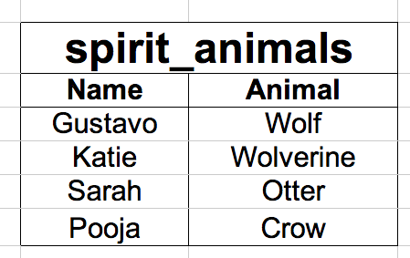
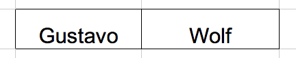
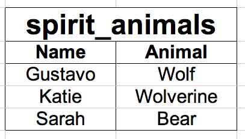
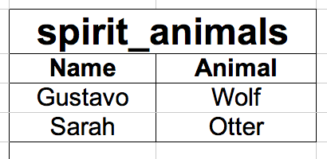

SQL as a Squirrel
SQL stands for Structured Query Language. Don't worry, it's not as difficult as it sounds.
In order for a web application to be useful it needs to store, access and organize data. A database performs these tasks. It is difficult to communicate directly with a database because a database speaks a different language than a normal person. This is why we use intermediaries like Ruby and SQL.
So, for the sake of explanation, let's pretend that databases speak Spanish and you, the user, only speak English. Fortunately you have two friends, one who knows English and German (his name is Ruby), and another who knows German and Spanish (her name is SQL). By telephone-lining, you, the user, are able to communicate with the database.
Typically web apps respond to user input and do one of four things with data in the database:
- Create
- Read
- Update
- Delete
Hey, see how that also spells out CRUD?? So exciting! Let's see it in action.
Here's our table.
(Click on the headers to see how to perform each command)
Let's add Pooja to the table (Create)
INSERT INTO spirit_animals (Name, Animal) VALUE (‘Pooja’, ‘Crow’)
I'm curious: what is Gustavo's spirit animal? (Read)
SELECT * FROM spirit_animals WHERE Gustavo
I want to change Sarah's spirit animal to a bear (Update)
UPDATE spirit_animals SET Animal=’Bear’ WHERE name='Sarah'
We've decide Katie's got to go (Delete)
DELETE from spirit_animals WHERE Name='Katie'

If you want to learn more about SQL, here are a few good resources to check out:
Treehouse
Zetcode